Trigonometri (Del 2)#
Oppgavene her kan løses med hjelpemidler.
Oppgave 1 (Vår 2024)
Du får vite følgende om en trekant \(ABC\)
\(AB\) er \(8\)
\(\angle A = 120\degree\)
Arealet av trekanten er \(4\sqrt{3}\)
Bestem lengdene av sidene \(AC\) og \(BC\) eksakt.
Fasit
Løsning
Vi kan lage oss en hjelpetegning for å få oversikt over trekanten:

Fig. 13 viser en skisse av trekanten der vi har satt \(x = AC\) og \(y = BC\).#
Siden arealet er \(T = 4\sqrt{3}\), kan vi sette opp en likningen for \(x\) med utgangspunkt i arealsetningen for trekanten:
Dermed er \(AC = 2\). Så bruker vi cosinussetningen for å bestemme \(y = BC\):
Dermed er \(BC = 2\sqrt{21}\).
Oppgave 2 (Høst 2024)
Maria skal lage en stjerne ved å sette sammen \(12\) like store likesidede trekanter.
Lengdene av sidekantene i trekantene er \(4\).
Ved å bruke Pytagoras’ setning og arealberegninger har Maria kommet fram til at arealet av stjernen vil bli \(48\sqrt{3}\).
Vis at du kan komme fram til samme resultat ved å bruke trigonometri.
Løsning
Hver trekant er likesidet som betyr at alle vinklene er \(60\degree\). Sidelengdene i trekantene er \(4\), som betyr at arealet av én trekant kan regnes ut med arealsetningen direkte:
Stjernen består av \(12\) slike trekanter, som betyr at arealet av stjernen er:
Oppgave 3 (Høst 2024)
Klassen til Isabel og Anniken skal vise at de kan bruke trigonometri til å bestemme arealet av figuren nedenfor.
{kind=link}
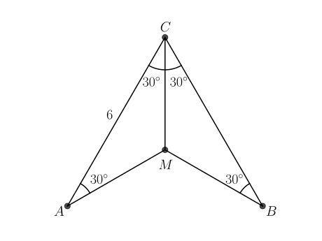
Læreren har delt klassen i grupper og gitt hver gruppe noen opplysninger i tillegg til informasjon kan leses ut fra figuren.
Gruppen til Isabel har fått vite at \(AD = 6.0\), \(BC = 10.0\), og at diagonalen \(AC = 16.4\).
Vis hvordan gruppen til Isabel kan bestemme arealet ved å bruke opplysningene de har tilgang til.
Husk å gjøre rede for hvilke trigonometriske sammenhenger du bruker.
Fasit
Løsning
Med den oppgitte diagonalen, er det naturlig å tenke på \(\square ABCD\) som bestående av to trekanter \(\triangle ABC\) og \(\triangle ACD\). Vi kan bestemme arealet av de to trekantene hver for seg og så summere dem.
For \(\triangle ABC\) kan vi bruke arealsetningen umiddelbart så lenge vi kjenner til sinus til én av vinklene i trekanten. Vi kan bruke cosinussetningen for å bestemme \(\cos \angle B\), og deretter kan vi Pytagoras’ identitet til å bestemme \(\sin \angle B\) ved
deretter brukes vi arealsetningen ved
Vi utfører beregningene med CAS:
{kind=link}
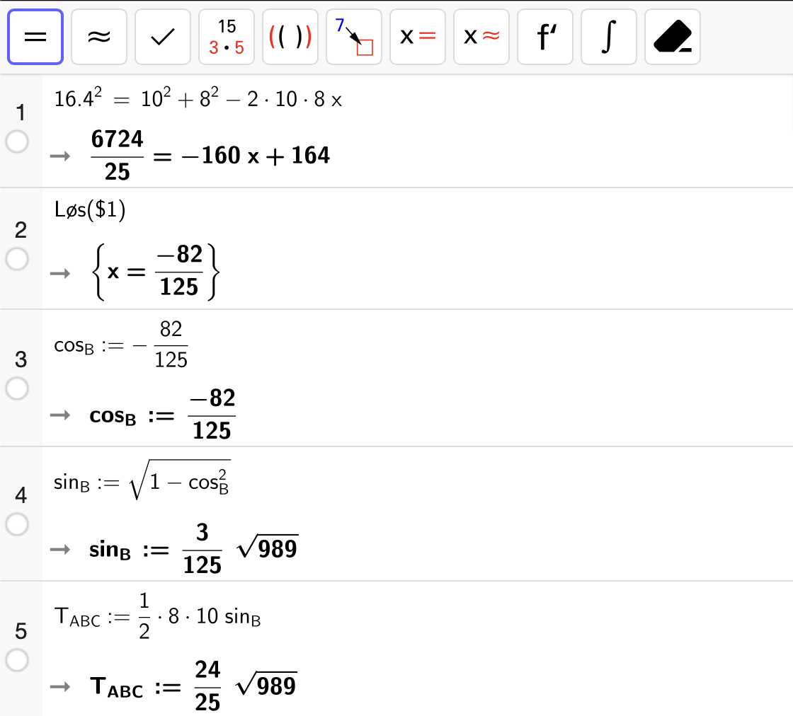
Fig. 14 her har vi satt \(x = \cos \angle B\) i første likning.#
Vi gjør tilsvarende utregning for \(\triangle ACD\) der vi må bestemme \(\cos \angle D\) med cosinussetningen etterfulgt av å bruke Pytagoras’ identitet for å bestemme \(\sin \angle D\) som vi så plugger inn i arealsetningen:
{kind=link}
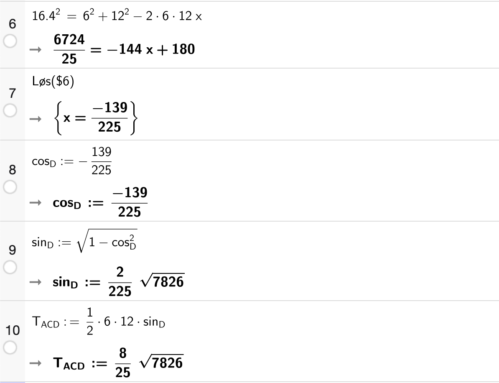
Fig. 15 her har vi satt \(x = \cos \angle D\) i første likning.#
Til slutt summerer vi de to arealene som gir:
{kind=link}
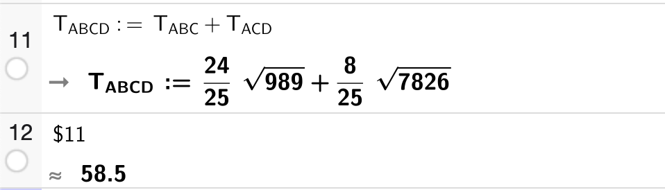
Dermed er arealet av figuren
Gruppen til Anniken har fått vite at \(\angle A = 62.5\degree\), \(\angle C = 38.3\degree\), \(\angle ABD = 45.5\degree\) og \(\angle CBD = 85.5\degree\).
Vis hvordan gruppen til Anniken kan bestemme arealet ved å bruke opplysningene de har tilgang til.
Husk å gjøre rede for hvilke trigonometriske sammenhenger du bruker.
Fasit
Løsning
Med opplysningene som er oppgitt, er det naturlig å trekke en diagonal \(BD\) slik at firkanten deles inn i to trekanter \(\triangle ABD\) og \(\triangle BCD\). Da kan vi bruke sinussetningen til å bestemme \(x = AB\) ved
som vi gjør med CAS:
{kind=link}
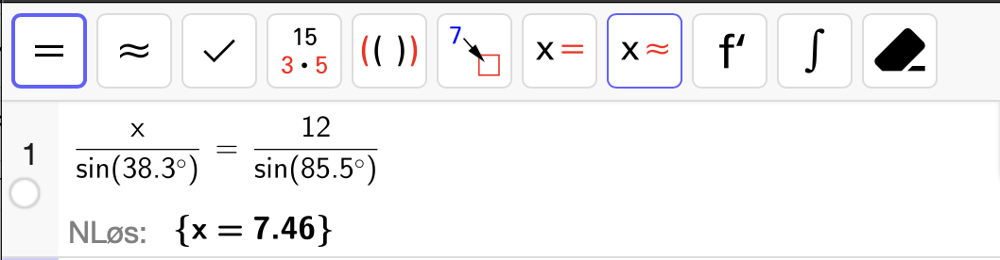
Deretter kan vi bruke at
og så bruke arealsetningen ut ifra denne vinkelen for å bestemme arealet av \(\triangle BCD\):
{kind=link}
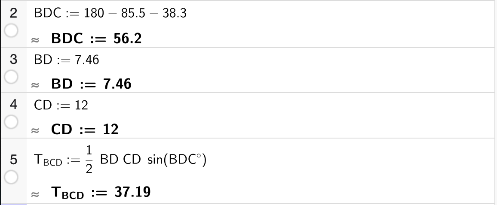
Deretter bruker vi arealsetningen utifra vinkelen \(\angle ABD\) til å bestemme arealet av \(\triangle ABD\):
{kind=link}
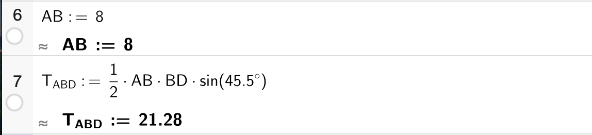
Deretter er det bare å summere arealene av de to trekantene:
{kind=link}
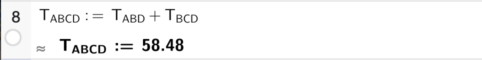
Altså er arealet av figuren
Oppgave 4 (Høst 2024)

I denne oppgaven skal du vise at du kan bruke trigonometri til å bestemme arealet av figuren ovenfor.
Bestem arealet.
Husk å gjøre rede for hvilke trigonometriske sammenhenger du bruker.
Fasit
Løsning
Vi starter med å lage en diagonal \(AC\) i firkanten slik at vi får to trekanter \(\triangle ABC\) og \(\triangle ACD\). Se figuren nedenfor.
{kind=link}
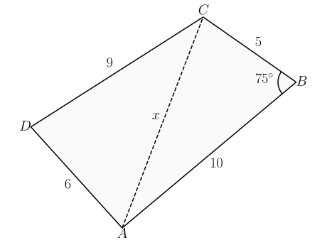
Fig. 16 viser firkanten der diagonalen \(x = AC\) er tegnet inn.#
Så bruker vi cosinussetningen for å bestemme lengden av diagonalen:
{kind=link}
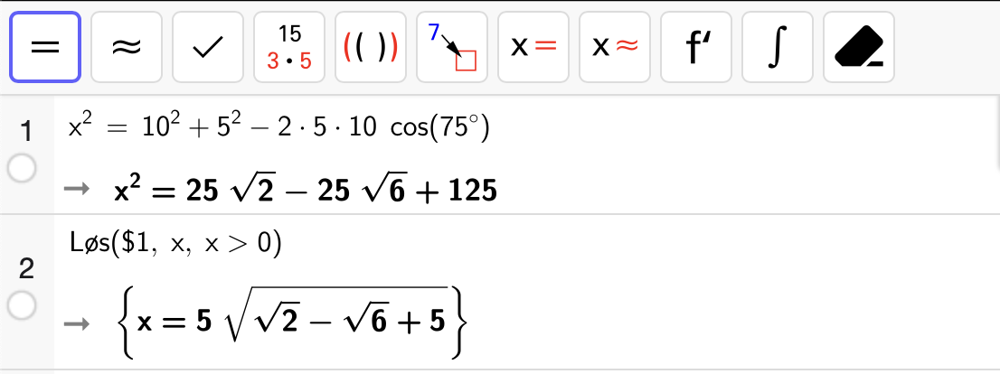
Dermed er \(AC\) eksakt gitt ved
Deretter kan vi bruke cosinussetningen til å bestemme \(\angle D\) slik at vi kan regne ut \(\sin \angle D\) når vi skal bruke arealsetningen for \(\triangle ACD\):
{kind=link}
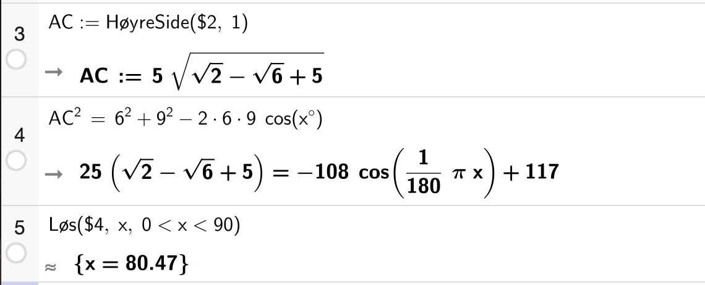
Med andre ord er \(\angle D \approx 80.47\degree\). Da kan vi bruke arealsetningen for å bestemme arealet av \(\triangle ACD\):
{kind=link}
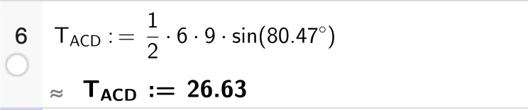
Altså er arealet av \(\triangle ACD\) gitt ved
Deretter bruker vi arealsetningen for å bestemme arealet av \(\triangle ABC\):
{kind=link}
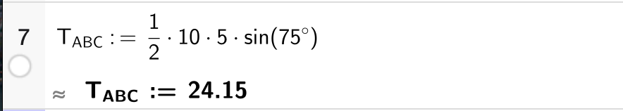
Til slutt summerer vi de to arealene for å bestemme arealet av firkanten:
{kind=link}
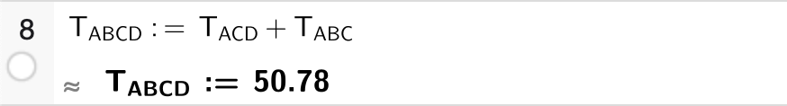
Altså er arealet av firkanten
Oppgave 5 (Høst 2022)
{kind=link}
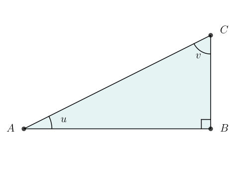
En sirkel har sentrum i \(S\). \(AB\) er diameter og \(C\) er ligger på sirkelperiferien.
Arealet av \(\triangle SBC\) er \(3\cdot \sqrt{2}\).
Bestem sirkelens radius. Bruk eksakte verdier.
Fasit
Løsning
Vi lar \(r\) være radiusen til sirkelen. Arealet til \(\triangle SBC\) kan da skrives som
I utregningen ovenfor brukte vi at \(\sin (45\degree) = \dfrac{\sqrt{2}}{2}\)
Videre er \(T_{\triangle SBC} = 3\sqrt{2}\), så vi kan sette opp en likning og løse den for radiusen \(r\) som gir:
Bestem arealet av \(\triangle ABC\). Bruk eksakte verdier.
Fasit
Løsning
Trekant \(\triangle ABC\) har samme høyde som \(\triangle SBC\), men grunnlinja er dobbelt så lang siden \(AB = 2\cdot SB = 2r\). Det betyr at arealet av \(\triangle ABC\) er dobbelt så stort som arealet av \(\triangle SBC\):
Oppgave 6 (Vår 2022)

Gitt firkanten \(ABCD\) ovenfor.
Bestem et eksakt uttrykk for omkretsen av firkanten \(ABCD\).
Fasit
Løsning
For å regne ut omkretsen av firkanten, trenger vi først å bestemme lengden av \(BD\). Vi kan bruke cosinussetningen til dette. La \(x = BD\). Da får vi:
{kind=link}
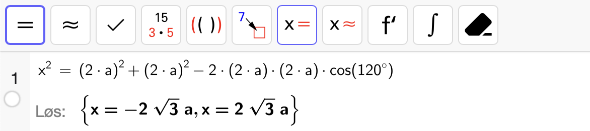
som betyr at \(BD = 2\sqrt{3} a\). Deretter kan vi bruke sinussetningen til å bestemme \(AB\). La \(x = AB\), da har vi:
{kind=link}
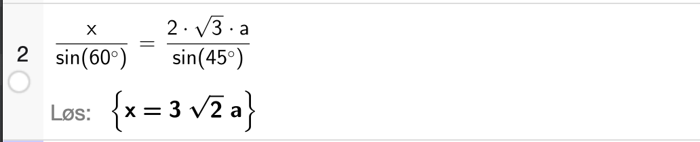
som betyr at \(AB = 3 \sqrt{2} a\). Så kan vi bruke sinussetningen én gang til for å bestemme \(AD\). Vi lar \(x = AD\), som gir:
{kind=link}
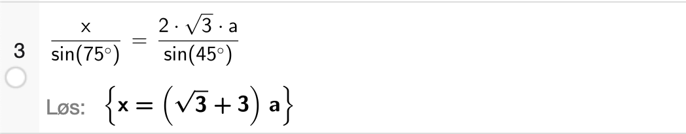
som betyr at \(AD = \left(\sqrt{3} + 3\right) a\). Så legger vi sammen alle sidene i firkanten for å bestemme omkretsen \(\mathcal{O}\):
Vis at forholdet mellom arealet av \(\triangle ABC\) og arealet av \(\triangle BCD\) er \(\dfrac{3}{2}\left(\sqrt{3} + 1\right)\)
Løsning
Vi regner ut arealet av \(\triangle ABC\) og \(\triangle BCD\) hver for seg, og deretter summerer vi de to arealene:
{kind=link}
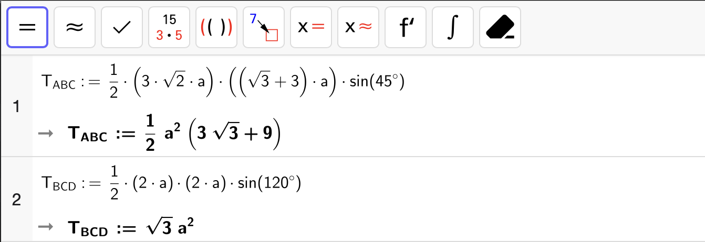
som betyr at
Deretter tar vi forholdet mellom \(T_{ABC}\) og \(T_{BCD}\):
{kind=link}
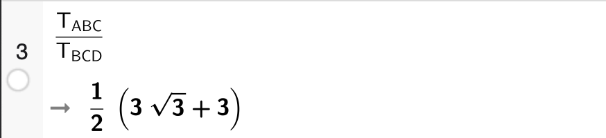
Altså er forholdet mellom arealene:
Oppgave 7 (Høst 2023)
{kind=link}
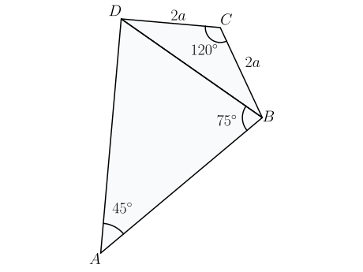
I denne oppgaven skal du vise at du kan bruke trigonometri til å bestemme arealet av figuren ovenfor.
Bestem arealet.
Husk å gjøre rede for hvilke trigonometriske sammenhenger du bruker.
Fasit
Løsning
Vi starter med å bestemme vinkel \(\angle C\) i \(\triangle BCD\) slik at vi kan bruke arealsetningen. Vi bruker cosinussetningen til å bestemme \(\angle C\):
{kind=link}
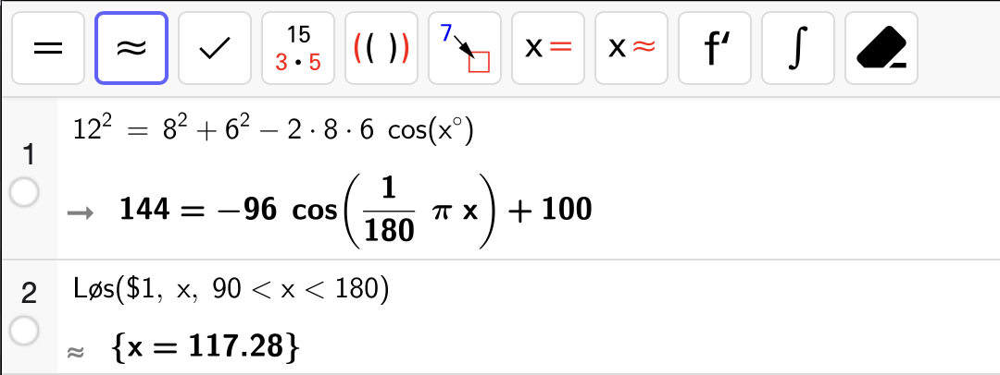
som betyr at \(\angle C \approx 117.28\degree\). Deretter bruker vi arealsetningen for å bestemme arealet av \(\triangle BCD\):
{kind=link}
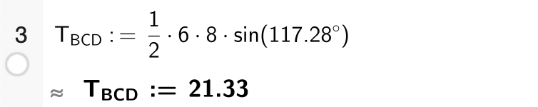
som betyr at \(T_{BCD} \approx 21.33\). Deretter bruker vi sinussetningen for å bestemme \(AD\). La \(x = AD\). Da får vi:
{kind=link}
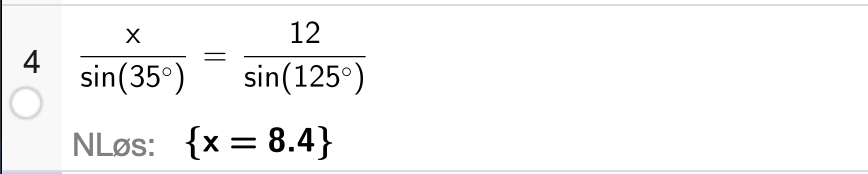
som gir \(AD \approx 8.4\). Til slutt bruker vi arealsetningen med utgangspunkt i \(\angle ADB\). Først kan vi merke oss at
Med arealsetningen får vi da:
{kind=link}
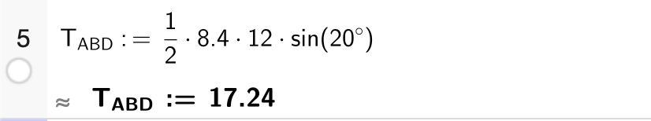
som gir \(T_{ABD} \approx 17.24\). Til slutt legger vi arealene sammen for å bestemme arealet til figuren:
{kind=link}
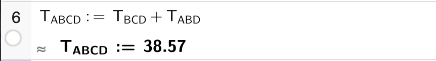
Altså er arealet av figuren
Oppgave 8 (Høst 2021)

Gitt firkanten \(ABCD\).
Vis at \(BD = \sqrt{3} \cdot a\).
Løsning
Først kan vi observere at \(\triangle ABD\) er en likebeint trekant siden
Da følger det at \(AD = a\). Da kan vi bruke cosinussetningen til å bestemme \(BD\). La \(x = BD\). Da har vi:
{kind=link}
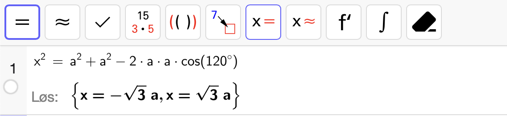
som betyr at \(AD = \sqrt{3} a\).
Bestem et eksakt uttrykk for omkretsen av firkanten.
Fasit
Løsning
For å bestemme omkretsen av firkanten, mangler vi nå bare å bestemme \(CD\). Siden vi kjenner til både \(BC\) og \(BD\), kan vi bruke cosinussetningen til å bestemme \(CD\). La \(x = CD\). Da får vi:
{kind=link}
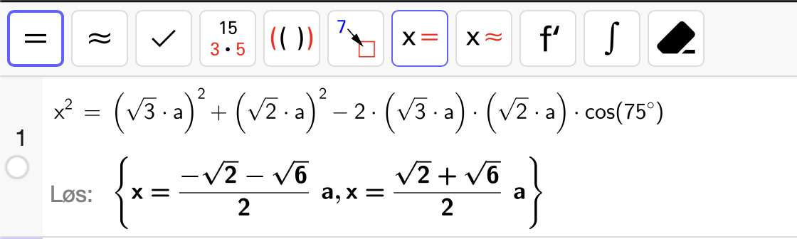
som betyr at
Da blir omkretsen \(\mathcal{O}\) av firkanten:
Bestem \(a\) slik at arealet av firkanten blir lik \(\sqrt{3}\).
Fasit
Løsning
Vi starter med å bestemme et eksakt uttrykk for arealet av firkanten. Vi tar først utgangspunkt i \(\triangle ABD\) og bruker arealsetningen med utgangspunkt i \(\angle A\):
{kind=link}
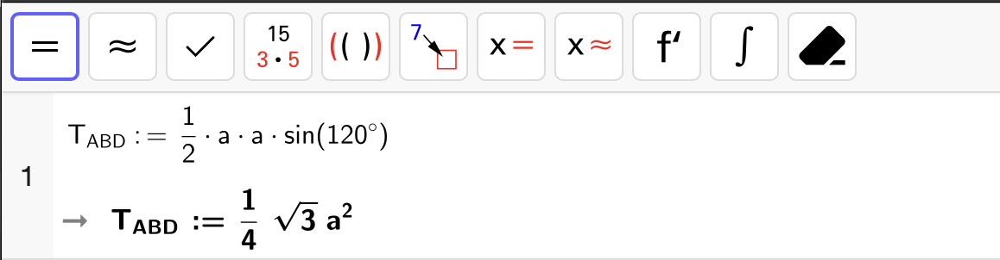
som gir \(T_{ABD} = \dfrac{1}{4}\sqrt{3} a^2\). Deretter bruker vi arealsetningen for \(\triangle BCD\) med utgangspunkt i \(\angle DBC\):
{kind=link}
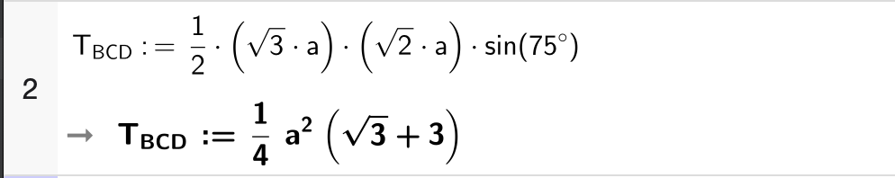
som gir at \(T_{BCD} = \dfrac{1}{4}\left(\sqrt{3} + 3\right) a^2\). Til slutt setter vi opp likningen
og løser likningen med hensyn på \(a\):
{kind=link}
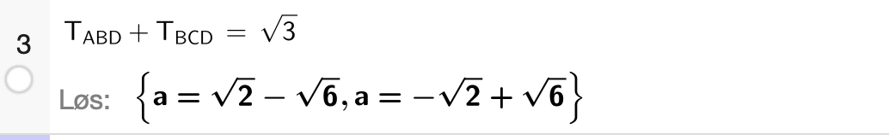
Siden \(\sqrt{6} > \sqrt{2}\), følger det at den eneste gyldige løsningen som gir det ønskede arealet er
Oppgave 9 (Vår 2023)
{kind=link}
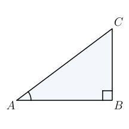
Punktene \(A\), \(B\) og \(C\) ligger på en sirkel med sentrum i \(S\) og radius \(r\).
\(\angle SBA = 30\degree\) og \(\angle BSC = 90\degree\).
Arealet av \(\triangle ABC\) er \(2\sqrt{3} + 6\).
Se figuren ovenfor.
Bestem en eksakt verdi for \(r\).
Fasit
Løsning
Først kan vi finne et eksakt uttrykk for arealet av \(\triangle ABC\) uttrykt ved \(r\). Vi har først og fremst at
Videre er \(\angle BSA = 120\degree\) siden \(\triangle ABS\) er en likebeint trekant der toppvinkelen er \(120\degree\). Dermed er arealet \(\triangle ABS\) gitt ved
Vi kan bestemme toppvinkelen i \(\triangle ASC\) ved å merke oss at en sirkel har \(360\degree\), som gir summen av toppvinklene, som betyr at
Dermed er arealet av \(\triangle ASC\) gitt ved
Arealet av trekanten er \(2\sqrt{3} + 6\) som betyr at vi bestemme \(r\) ved å løse likningen
Vi gjør den siste her med CAS:
{kind=link}
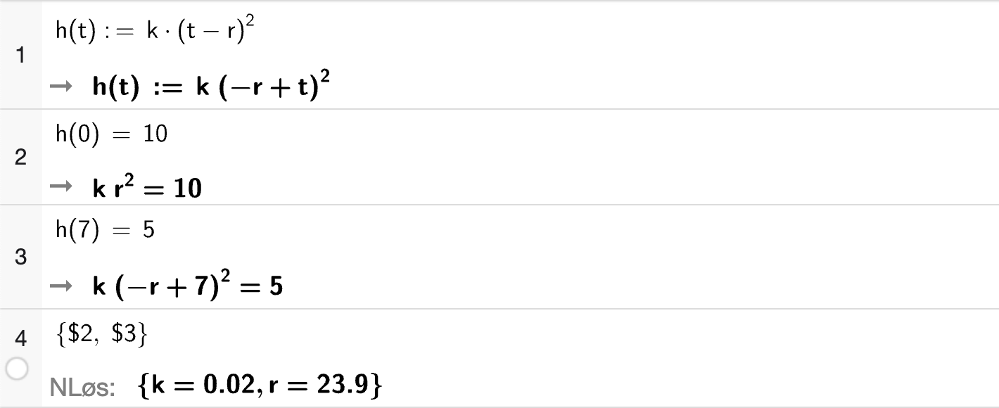
Dermed er vil arealet av trekanten være lik \(2 \sqrt{3} + 6\) når
Oppgave 10 (Høst 2025)
Gitt figuren ovenfor.
Gjør beregninger og vis at \(AC = 3\).
Løsning
La \(x = AC\). Vi bruker sinussetningen for å bestemme sidelengden med CAS:
{kind=link}
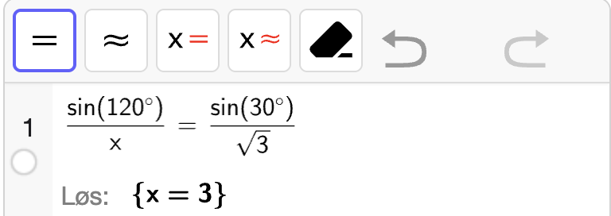
Altså er \(AC = 3\).
Bestem arealet av firkanten \(ABCD\).
Gi svaret eksakt.
Fasit
Løsning
Firkanten \(ABCD\) er består av to trekanter \(\triangle ABC\) og \(\triangle ACD\).
Arealet av \(\triangle ACD\) kan vi bestemme direkte med arealsetningen:
Vi regner ut med CAS:
{kind=link}
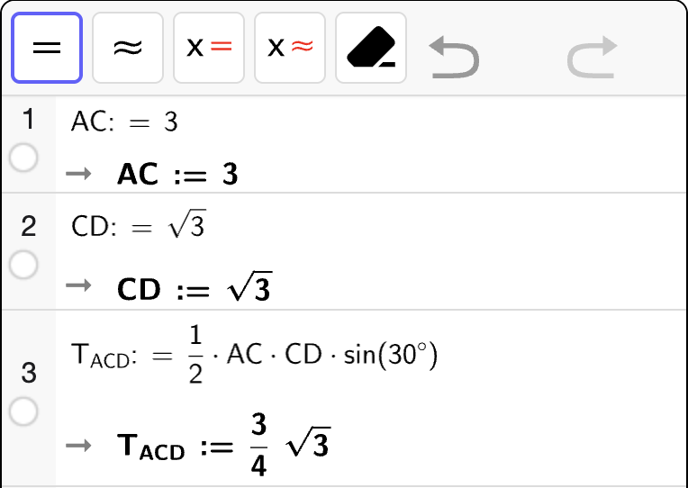
Altså er \(T_{\triangle ACD} = \dfrac{3\sqrt{3}}{4}\).
For å bestemme arealet av \(\triangle ABC\) bruker vi også arealsetningen. Her velger vi å ta utgangspunkt i vinkelen \(\angle BAC = 45\degree\) som vil gi
Vi kjenner ikke til \(AB\), men den kan vi bestemme ved hjelp av cosinussetningen med utgangspunkt i vinkelen \(\angle BAC\) som gir
Vi bruker CAS til å bestemme \(AB\). La \(x = AB\).
{kind=link}
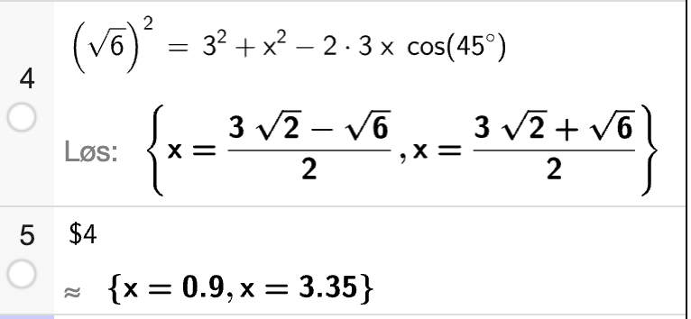
Sidelengden \(AB\) er lenger enn \(AC\), så vi må velge den største løsningen. Altså er
Så regner vi ut arealet av \(\triangle ABC\) med CAS:
{kind=link}
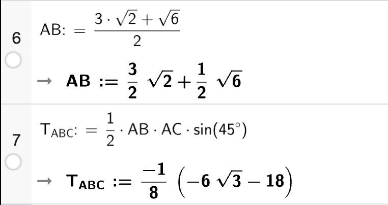
Så legger vi sammen de to arealene for å få det eksakte arealet av firkanten \(ABCD\):
{kind=link}
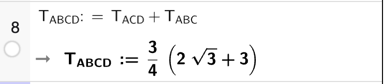
Dermed er det eksakte arealet av firkanten \(ABCD\) gitt ved
Oppgave 11 (Vår 2024)

Når en lysstråle går fra luft til vann, skiften den retning.
På figuren står linjen \(m\) vinkelrett på vannoverflaten og lysstrålen går fra å danne en vinkel \(u\) med \(m\) til å danne en vinkel \(v\) med \(m\).
Når lysstrålen går fra luft til vann, vil
Hvor stor må vinkelen \(u\) være for at vinkelen \(v\) skal bli \(39\degree\)?
Fasit
Løsning
Vi løser likningen
ved å bruke CAS:
{kind=link}
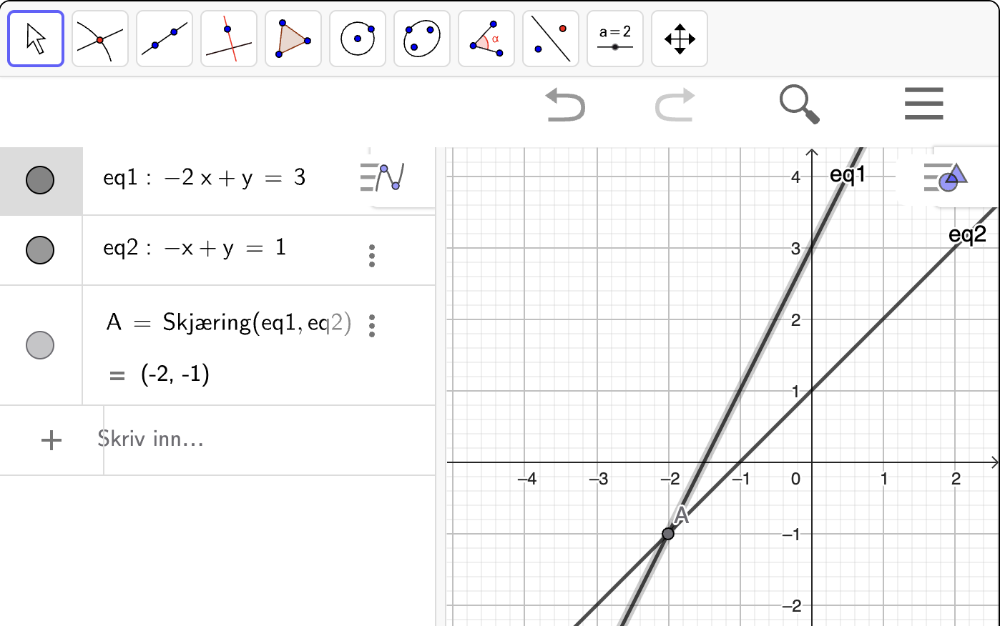
Altså er \(u \approx 56.82\degree\) dersom \(v = 39\degree\).
Hva vil skje med vinkelen \(v\) dersom vinkelen \(u\) nærmer seg \(90\degree\)?
Fasit
Løsning
Når vinkelen \(u\) nærmer seg \(90\degree\), så vil \(\sin u\) nærme seg \(1\). Det betyr at vi nærmer oss likningen
Vi løser likningen med CAS:
{kind=link}
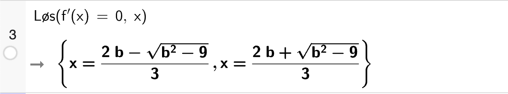
Som betyr at vinkelen \(v\) nærmer seg \(v \approx 48.75\degree\) når \(u\) nærmer seg \(90\degree\). Det betyr at retningen på lysstrålen endrer seg når den omtrent går parallelt med vannoverflaten med en vinkel på \(48.75\degree\) med linja \(m\).
Kan vinklene \(u\) og \(v\) bli like store?
Fasit
Ja, da er \(u = v = 0\degree\).
Løsning
Vinklene \(u\) og \(v\) kan bli like store dersom lysstrålen går parallelt med linja \(m\), siden da er \(\sin u = 0\) og dermed også \(\sin v = 0\). Den praktiske tolkningen av dette er at dersom lysstrålen kommer normalt ned på vannoverflaten, så endrer den ikke retning. Det betyr at vinklene bare kan bli like store dersom \(u = v = 0\degree\).